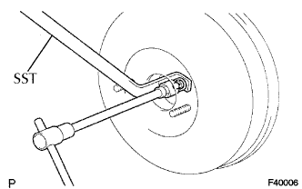

XI LANH PHANH CHÍNH > KIỂM TRA |
| 1. KIỂM TRA VÀ ĐIỀU CHỈNH CẦN ĐẨY BỘ TRỢ LỰC PHANH |
 |
Hãy đặt SST lên xi lanh chính và sau đó hạ thấp chốt cho đến khi đỉnh của nó chạm nhẹ và píttông.
 |
Lật ngược SST xuống và sau đó đặt nó lên bộ trợ lực.
Đo khe hở giữa cần đẩy bộ trợ lực phanh và đầu chốt (SST).
|  |
Để điều chỉnh khe hở của cần đẩy, trước hết đạp bàn đạp phanh sao cho cần đẩy nhô lên. Sau đó cố định cần đẩy tại vị trí đó bằng SST và quay đai ốc lục giắc để điểu chỉnh khe hở.